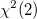

Angenommen, Sie möchten den Gesundheitsstatus einiger Studenten überprüfen. Sie erfassen 40 Studierende anhand Name, Geschlecht, Alter, Größe und Gewicht. Nachdem Sie Ihre Daten gesammelt haben, verwenden Sie den Test auf Normalverteilung, um zu untersuchen, ob das Gewicht der Studierenden einer Normalverteilung folgt.
Statistische Modell hängen normalerweise von einigen zugrunde liegenden Annahmen ab. Eine häufige Annahme ist, dass eine normalverteilte Grundgesamtheit vorliegt. Leider nehmen viele Analysten eine Normalverteilung an, ohne einen empirischen Nachweis oder Test durchzuführen. Wenn die Annahme der Normalverteilung verletzt wird, sind unsere Schlussfolgerungen möglicherweise nicht zuverlässig.
Es ist schwierig, einen Standard zum Interpretieren der Ergebnisse von Tests auf Normalverteilung zu definieren, da die Anforderungen je nach Disziplin und Analyst variieren. Einige Testmethoden sind möglicherweise zufriedenstellend für ein Feld, aber unzureichend für ein anderes.
Es gibt zwei primäre Herangehensweisen, um einen Test auf Normalverteilung durchzuführen: grafische und numerische Methoden. Grafische Methoden tendieren dazu, intuitiv und einfach zu interpretieren zu sein. Numerische Methoden sind genauer und daher objektiver.
Stamm-Blatt-Diagramme, Boxdiagramme, Punktdiagramme, Histogramme sowie P-P- oder Q-Q-Diagramme sind nützlich beim Visualisieren des Unterschieds zwischen einer empirischen Verteilung und einer theoretischen Normalverteilung. Origins Test auf Normalverteilung bietet Histogramme und Boxdiagramme. Es sollte jedoch erwähnt werden, dass Origin auch P-P- und Q-Q-Diagramme im Menü Zeichnen enthält.
Eine sehr direkte Möglichkeit, einen Test auf Normalverteilung durchzuführen, ist ein Histogramm zu erstellen. Es ist bekannt, dass die Form einer Normalverteilung symmetrisch ist und klassischerweise "glockenförmig". Das Ansehen eines Histogramms vermittelt einen groben Eindruck von der Natur der Verteilung einer Grundgesamtheit. Das Boxdiagramm stellt so etwas wie eine Ergänzung zu dem Histogramm dar. Ein Boxdiagramm fasst effektiv die Hauptperzentile Minimum, 25. Perzentil (1. Quartil), 50. Perzentil (Median), 75. Perzentil (3. Quartil) und Maximum zusammen, wobei es eine Box und Linien verwendet. Wenn das 25. und 75. Perzentil in Bezug auf den Median symmetrisch sind, und der Median- und Mittelwert sich ungefähr auf der gleichen Position in der Nähe der Mitte der Box befinden, dann haben wir Grund zu glauben, dass die Variable, die uns interessiert, möglicherweise normalverteilt ist. In dem obenstehenden Beispiel zur Datei body.dat ist die Form nicht exakt symmetrisch, aber nahezu "glockenförmig". Das Boxdiagramm der gleichen Daten weist ebenfalls auf eine ungefähre Symmetrie hin.
Es ist bekannt, dass Schiefe- und Kurtosismaße für den Test auf Normalverteilung angewendet werden können. Die Schiefe wird allgemein definiert als ein drittes standardisiertes Moment, ein Maß für den Grad an Symmetrie. Wenn die Schiefe größer als Null ist, ist die Verteilung rechtsschief und wir zählen mehr Beobachtungen auf der linken Seite der Verteilungskurve; umgekehrt, wenn die Schiefe kleiner als 0 ist, sind die Beobachtungen auf der rechten Seite der Kurve verteilt. Die Kurtosis, ein viertes standardisiertes Moment, misst den Peakausdruck oder wie dünn die Endbereiche besetzt sind. Beachten Sie, dass die standardmäßige Normalverteilung eine Kurtosis = 0 hat (gemäß der Definitionskonvention für "Excess-Kurtosis"). Wenn also eine berechnete Kurtosis > 0 ist, dann hat die Verteilung dünn besetzte Endbereiche und einen höheren Peak im Vergleich zur Standardnormalverteilung. Origin berechnet sowohl Schiefe als auch Kurtosis. Einzelheiten lesen Sie bitte unter Spaltenstatistik.
Die Tests Kolmogorov-Smirnov, Kolmogorov-Smirnov-Lilliefors, Anderson-Darling und Cramer-von Mises sind Methoden, die auf empirischen Verteilungsfunktionen (EDF) basieren, während es sich beim Jarque–Bera- und Schiefe-Kurtosis-Test (alias D'Agostino-K) um Tests handelt, deren Grundlage eine Chi-Quadrat-Verteilung ist. Der Chen-Shapiro-Test ist eine normalisierte, auf Abständen basierende Methode, die sich durch Leistungsstärke und Einfachheit auszeichnet. Bei den Shapiro-Wilk-, Ryan-Joiner- und Shapiro-Francia-Tests, wie Chen-Shapiro, handelt es sich um auf Regression und Korrelation basierende Methoden.
Origin bietet Anwendern die weitläufig verwendeten Methoden wie den S-W-, K-S-, Lilliefors-, A-D-, D'Agostino-K- und C-S-Test. Darüber hinaus gibt es sechs weitere Tests auf Normalverteilung in Origin. Sie können die folgende Tabelle verwenden, um Sie bei der Wahl des Tests zu unterstützen. Beachten Sie, dass in Origin vielmehr die kritischen Werte als die p-Werte für den Chen-Shapiro-Test ermittelt werden. Die kritischen Wert können auch zum Testen verwendet werden. Wenn der festgelegte statistische Wert kleiner oder gleich dem kritischen Wert von 5% ist, dann sollte der p-Wert größer als oder gleich 0,05 sein. Daher würden wir die Nullhypothese für Alpha = 0,05 nicht zurückweisen.
| Testmethode | Statistik | N-Bereich | Basiert auf Verteilung |
|---|---|---|---|
| Kolmogorov-Smirnov | D | 3 <= N | EDF |
| Lilliefors | L | 4 <= N | EDF |
| Anderson-Darling | A-Quadrat | 8 <= N | EDF |
| D'Agostino-K | Chi-Quadrat | 4 <= N |  |
| Shapiro-Wilk | W | 3 <= N <= 5000 | - |
| Chen-Shapiro | QH | 10 <= N <= 2000 | - |
Hinweis: Nur weil Sie die Anforderungen an den Stichprobenumfang erfüllen (N in der obenstehenden Tabelle), bedeutet das keine Garantie dafür, dass das Testergebnis aussagekräftig ist. Fast alle Methoden zum Testen der Normalverteilung sind eher leistungsschwach, wenn Sie auf kleine Stichprobenumfänge angewendet werden (weniger als oder gleich 30).